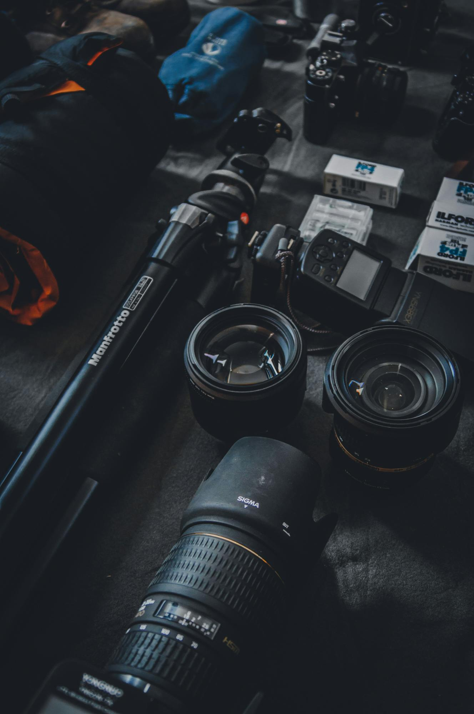

REC 00:00:00:00
4K RAW • 60FPS
ISO 800 • f/2.8
Developing Visuals
00
%
-2-10+1+2
Shutter: 1/125
WB: 5600K
Dar es Salaam // TZ
BATTERY: 98%

4K RAW • 60FPS
ISO 800 • f/2.8
Shutter: 1/125
WB: 5600K
Dar es Salaam // TZ
BATTERY: 98%